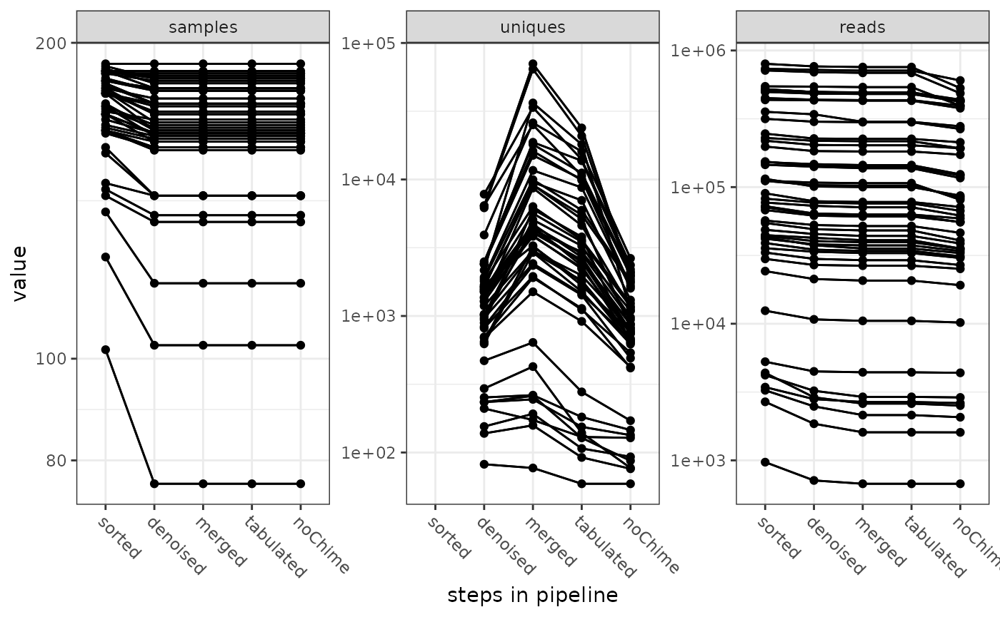

vignettes/MultiAmplicon-real-world-example.Rmd
MultiAmplicon-real-world-example.RmdWe first download the dataset consisting of 192 fastq file-pairs from 18S and 16S amplicon sequencing of feces and intestinal contents of carnivores (hyenas and wolves). The help files carnivoreSeqRuns shows how this data has been downloaded from NCBI-SRA.
After download we can run our standard workflow. But as usual with real data we have to filter the input files first. This particular sequencing was of quite low quality, so we have to trim and screen quite harshly.
library(MultiAmplicon)
## And we'll also use some dada2 functions directly
library(dada2)
path <- "download_sra" ## change according to where you downloaded
fastqFiles <- list.files(path, pattern=".fastq.gz$", full.names=TRUE)
fastqF <- grep("_1.fastq.gz", fastqFiles, value = TRUE)
fastqR <- grep("_2.fastq.gz", fastqFiles, value = TRUE)
samples <- gsub("_1.fastq\\.gz", "\\1", basename(fastqF))
filt_path <- "filtered_sra"
if(!file_test("-d", filt_path)) dir.create(filt_path)
filtFs <- file.path(filt_path, paste0(samples, "_F_filt.fastq.gz"))
names(filtFs) <- samples
filtRs <- file.path(filt_path, paste0(samples, "_R_filt.fastq.gz"))
names(filtRs) <- samples
## some files will be filtered out completely, therefore allowing 50
## files less present and still don't redo filtering
redo <- sum(file.exists(fastqF)) -
sum(file.exists(filtFs)) > 50
if(redo){
lapply(seq_along(fastqF), function (i) {
filterAndTrim(fastqF[i], filtFs[i], fastqR[i], filtRs[i],
truncLen=c(170,170), minLen=c(170,170),
maxN=0, maxEE=2, truncQ=2,
compress=TRUE, verbose=TRUE)
})
}
names(filtFs) <- names(filtRs) <- samples
files <- PairedReadFileSet(filtFs, filtRs)
#> Warning in validityMethod(object):
#> file filtered_sra/SRR5569127_F_filt.fastq.gz does not exist on your system
#> file filtered_sra/SRR5569127_R_filt.fastq.gz does not exist on your systemNow we have our sequencing read input data, only the primers are still missing. The primer set for the above is included in the MultiAmplicon package. The data has been generated using a microfluidics PCR system, if you want to know more about this you can consult Heitlinger et al. (2017) or Lesniak et al. (2017).
primer.file <- system.file("extdata", "real_world_primers.csv",
package = "MultiAmplicon")
ptable <- read.csv(primer.file, sep=",", header=TRUE, stringsAsFactors=FALSE)
primerF <- ptable[, "TS.SequenceF"]
primerR <- ptable[, "TS.SequenceR"]
names(primerF) <- as.character(ptable[, "corrected.NameF"])
names(primerR) <- as.character(ptable[, "corrected.NameR"])
primers <- PrimerPairsSet(primerF, primerR)
MA <- MultiAmplicon(primers, files)We start by sorting our amplicons by primer sequences cutting off the latter from sequencing reads. The directory for sorted amplicons must be empty before that.
filedir <- "stratified_files"
if(dir.exists(filedir)) unlink(filedir, recursive=TRUE)
MA <- sortAmplicons(MA, n=1e+05, filedir=filedir)The function is “streaming” fastq files, so that potentially large files can be handled on machines with modest memory. The parameter “n” controls how big the streamed chunks are. Increasing this value leads to faster processing and higher memory usage.
errF <- learnErrors(unlist(getStratifiedFilesF(MA)), nbase=1e8,
verbose=0)
errR <- learnErrors(unlist(getStratifiedFilesR(MA)), nbase=1e8,
verbose=0)
MA <- dadaMulti(MA, Ferr=errF, Rerr=errR, pool=FALSE,
verbose=0)The sequences were quite low quality and we shortened them massively. Therefore we have to assume that most sequences won’t have enough overlap to merge. Now we figure out for which amplicons this is the case.
MA <- mergeMulti(MA)
propMerged <- MultiAmplicon::calcPropMerged(MA)
summary(propMerged)
#> Min. 1st Qu. Median Mean 3rd Qu. Max.
#> 0.0000000 0.0002201 0.0013316 0.0416265 0.0063945 0.8817513
table(propMerged<0.8)
#>
#> FALSE TRUE
#> 1 47So we just found out that for this dataset only one amplicon could be merged retaining over 80% of the sequence. Lets run the merge again, concatenating all amplicons with less than 80% merged by setting justConcatenate to TRUE for those.
MA <- mergeMulti(MA, justConcatenate=propMerged<0.8)
MA <- makeSequenceTableMulti(MA)
MA <- removeChimeraMulti(MA)When we are done with our processing, we usually want to know what happened to our raw data (sequencing reads) along the MultiAmplicon/dada2 pipeline.
tracking <- getPipelineSummary(MA)
plotPipelineSummary(tracking)The pipeline summary tells us how many samples, how many unique sequences and how many sequence read pairs were recovered at different steps through the pipeline. It gives this information for the different amplicons.
The output of the pipeline summary can be modified with standard ggplot syntax.
library(ggplot2)
plotPipelineSummary(tracking) +
scale_y_log10() +
geom_line()
We haven’t genereated a taxonomical annotation for this ASVs yet. oing so within MulitAmplicon is currently only supported on Unix systems (see blastTaxAnnot). You will need to generat a taxonomical annotation in one way or the other at some point, but here we demonstrate ho to do an export to a phyloseq object first.
library(phyloseq)
PH <- toPhyloseq(MA, samples=colnames(MA))We here produced a combined phyloseq object including ASVs from all different amplicons.
We now can use phyloseq for one of the many supported analyses.
phyloseq::plot_richness(PH, measures=c("Observed", "Chao1"))